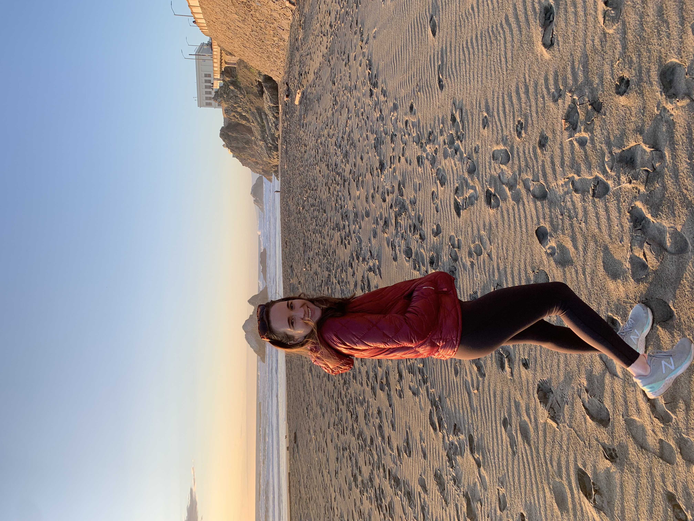
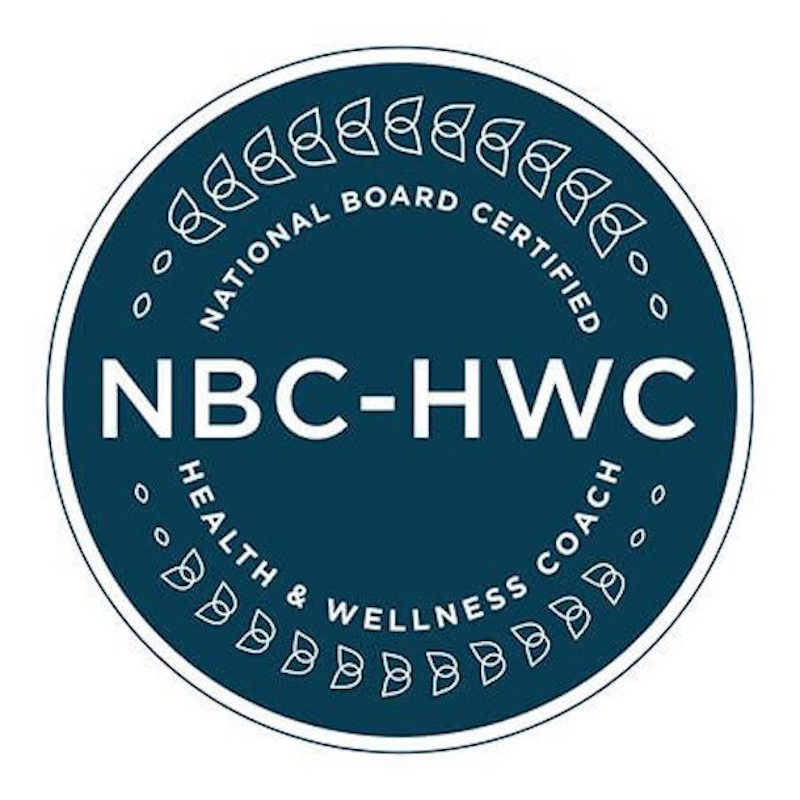

Resume

Summary
- Aspiring web developer actively learning HTML, CSS, and JavaScript to expand skills and pursue opportunities in web development.
- National Board-Certified Health and Wellness Coach committed to continuous learning with extensive experience in delivering personalized clinical care to diverse populations. Adept at utilizing science-based therapeutic tools through digital platforms to promote patient success and adherence.
- Skilled in motivational interviewing, patient-centered goal setting, and Cognitive Behavioral Therapy techniques to drive positive behavior change. Recognized for effectively managing projects and teams in community service settings.
Education
University of Colorado Boulder
- Bachelor of Arts in Communication, May 2018
Work Experience
Virta Health, Remote
Health Coach
April 2021-Present
- Deliver daily personalized clinical patient care & customer service with science-based therapeutic tools, using an evolving digital
app as primary source of communication (text messaging and phone calls)
- Convey patient status changes to Virta medical staff and communicate physician recommendations to patients daily
- Ensure patient success and daily adherence using motivational interviewing, patient-centered goal setting, Cognitive Behavioral
Therapy techniques, etc.
- Review and update medications, medical history, and lab values in Virta's HIPAA-compliant portal
- Learn and incorporate new scientific findings into patient education and daily workflow
- Collaborate cross-functionally with Enrollment Advisors, Support Operations, and Product Teams to contribute feedback and
communicate coaching best practices
- Leverage Virta's key performance indicators (KPIs) to track personal performance each quarter
- Evolve team culture and overall process improvements by providing regular continuous feedback and sharing specific expertise
and skills with teammates during weekly meetings
Noom Inc., Remote
Health Coach
October 2019-April 2021
- Administered a structured condition-specific plan and curriculum to a non-clinical population
- Taught clients health and psychology related skills (e.g. portion control, problem solving); analyzed for mastery of skills
- Provided daily positive reinforcement and accountability; encouraged self-efficacy; assessed for motivation, ensured
follow-through through Motivational Interviewing
- Led clients to identify pervasive personal, situational and environmental barriers, and thinking errors (e.g., sabotaging thoughts,
catastrophizing, etc.), and suggested alternatives
- Noted when clients departed from scope of practice; referred clients to outside professionals when needed
National Civilian Community Corps (NCCC), Vicksburg, MS
Field Team Leader
June 2018-May 2019
- Completed over 1800 hours of national and community service while advising, supervising, and supporting a diverse team of 7-10
young adults
- Managed a programmatic budget and inventory of federal assets totaling $45,000
- Managed 5 different projects, and relationships with sponsor organizations to develop and strengthen program partnerships,
representing NCCC positively
- Projects included partnering with St. Thomas Recovery Team, My Brother's Workshop, and All Hands and Hearts to
assist in long term disaster recovery efforts following Hurricanes Irma and Maria in St. Thomas, US Virgin Islands
- Partnered with AmeriCorps Disaster Response Team alongside Utah Conservation Corps and SBP
to provide disaster relief services in North Carolina following Hurricane Harvey
- Completed mid-project and team evaluations, Weekly Progress Reports, and Project Completion Reports for national review
documenting quantifiable accomplishments, narratives, and team well-being
- Reinforced and delivered training surrounding leadership, service learning, diversity, and civic engagement over course of 11
months
Skills
- HTML
- Interpersonal and Intercultural Communication
- Remote Teamwork
- Problem Solving
- Motivational Interviewing
Certifications 
- National Board Certified Health and Wellness Coach, National Board for Health and Wellness Coaching
About Me
Contact Page